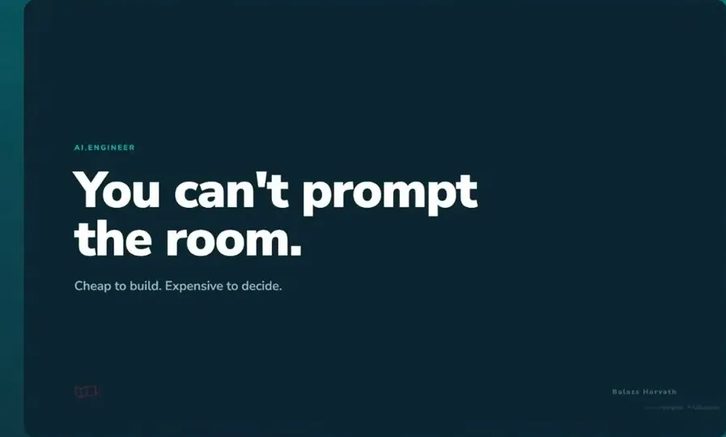
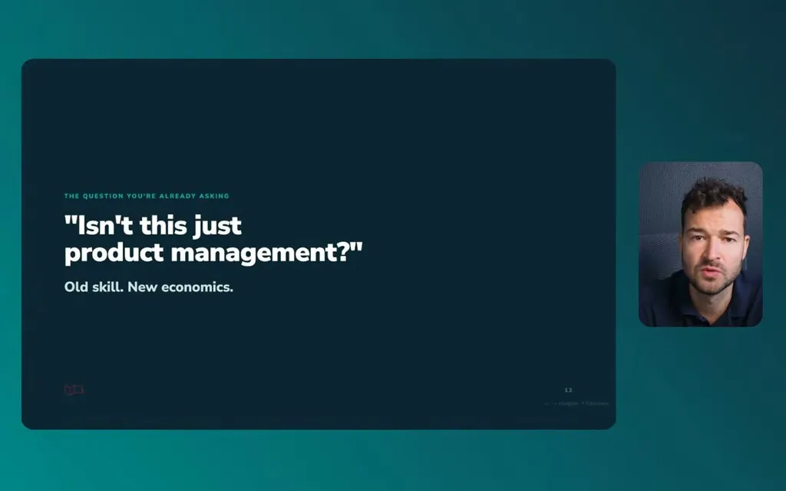
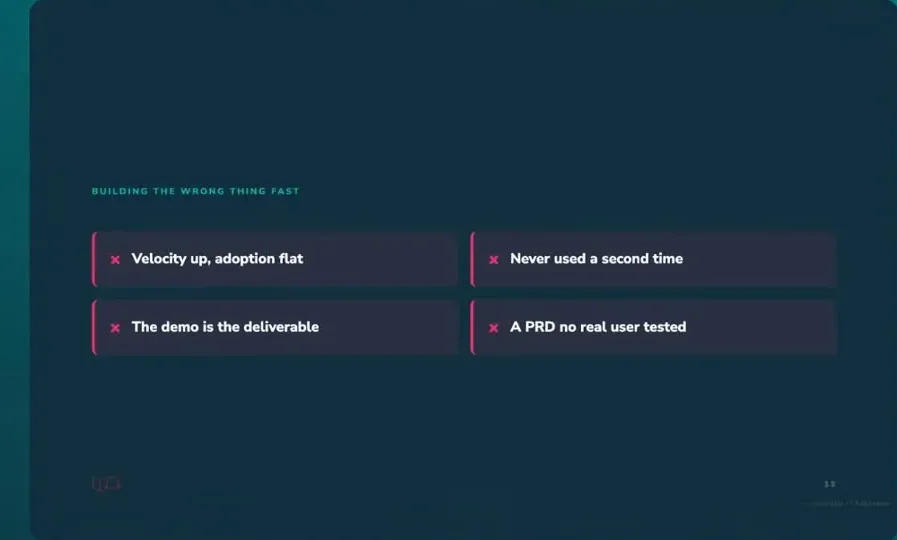
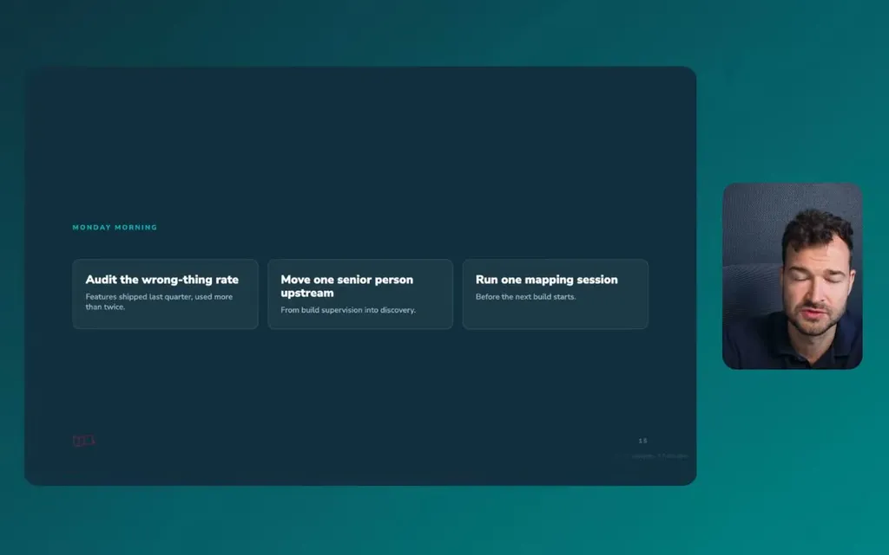
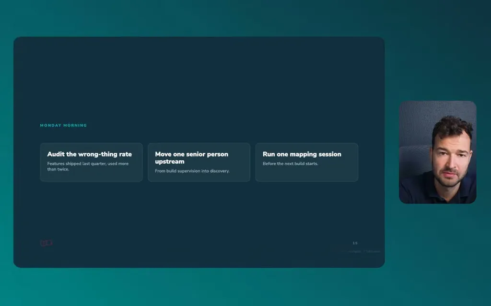
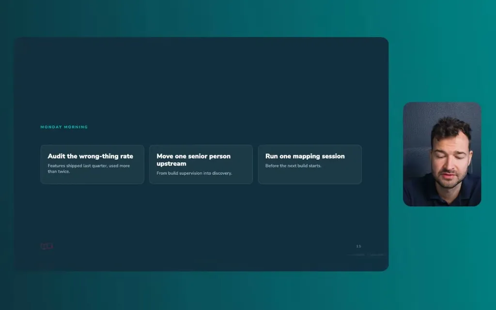
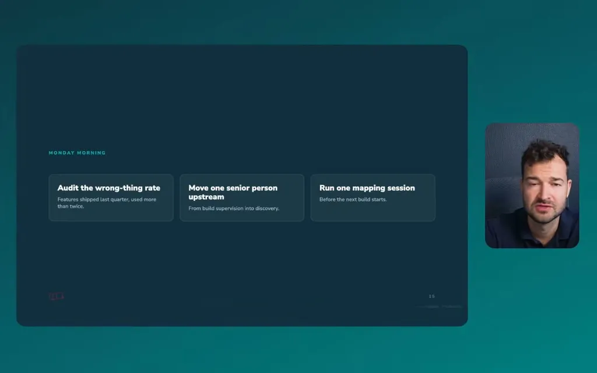
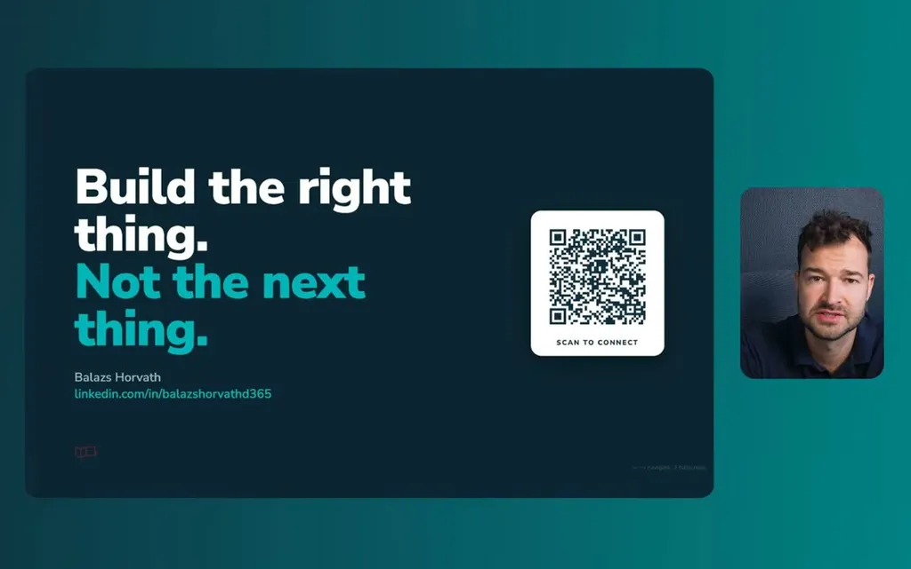
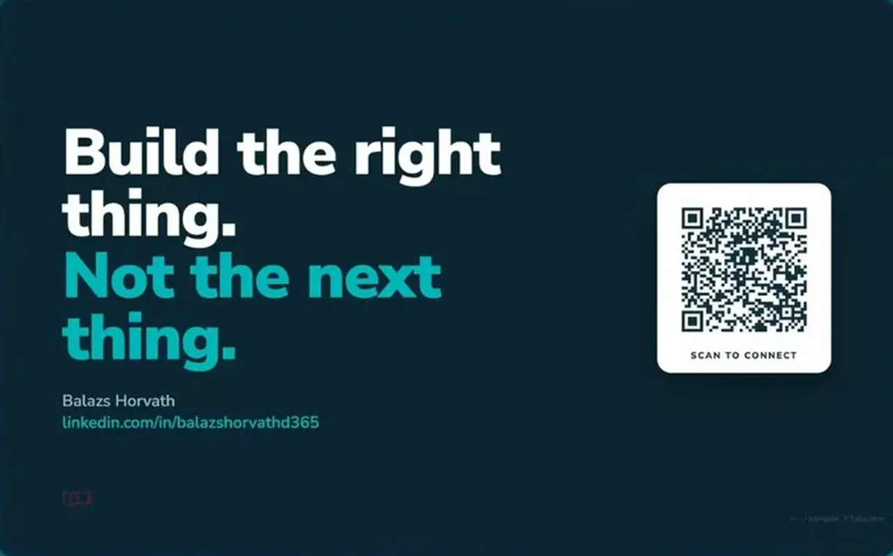

Argues that once code generation is cheap, the bottleneck shifts to requirements elicitation and stakeholder access, and offers a concrete artifact (story maps with persona/need/why structure) plus four screening questions for deciding w...
This traces the talk's argument from 'code is cheap' to a concrete screening and measurement practice, not a literal system the speaker diagrammed (ours).
“we had about 21 agents uh agent ideas and 17 of those were abandoned because they actually created no um business value”
said at 00:30“the real bottleneck is getting your people, your stakeholders, your decision-makers into the room and being able to access them and elicit the requirement”
said at 02:32“the chances are that you are replicating what already exists because AI by definition is coded to give you the most common answers”
said at 03:33“It is intended to stay at a fairly high level so you can get a a big picture, and then in you can decide what it is that you want to build and release”
said at 05:09“AI is really good at pattern recognition and it was actually trained on the user story structure because it's a very well-known and well-used setup”
said at 06:41“as whose problem is this? Whose problem are we actually solving?”
said at 07:43“if the demo is the deliverable. We want to make sure that people can can put things into production”
said at 11:40“the number of features shipped last quarter, that should be should be eliminated and you should just start looking at the number of features that we shipped that is actually used more than twice”
said at 13:23The claim that 'AI is coded to give you the most common answers' is asserted as a fact about model training rather than demonstrated -- it's a reasonable intuition about mode-seeking behavior in RLHF-tuned models but the talk offers no evidence for it beyond the Ford analogy (ours).









| Stance | Claim | t |
|---|---|---|
| asserts | At an internal hackathon with 21 agent ideas, 17 were abandoned because they created no business value, and 4 had a big impact on how the team works today. | 00:30 |
| asserts | Getting access to code and being able to build is no longer the bottleneck; the real bottleneck is getting stakeholders into the room to elicit requirements. | 02:32 |
| warns | Using AI to build without steering toward better requirements tends to replicate what already exists because AI gives the most common answers by default. | 03:33 |
| recommends | A story map should stay at a fairly high level with a backbone of process stages so teams can decide what to build and release as MVP versus backlog. | 05:09 |
| recommends | User stories should follow the persona/what/need/why structure because AI was trained on that well-known format and produces better results when given it. | 06:41 |
| recommends | Before building, ask whose problem it is, what winning looks like for them, what would make them refuse to use it, and whether it changes a decision. | 07:43 |
| warns | Treating a demo as the deliverable is an anti-pattern; the goal is for people to put things into production rather than only see a nice-looking demo. | 11:40 |
| recommends | Replace tracking the number of features shipped with tracking the number of features that get used more than twice. | 13:23 |
| asserts | The speaker spent 13 years as the bridge between business, IT, and developers, moving from writing functional specifications to founding Visual Labs. | 01:01 |
Machine-readable copy embedded in this page (script#ontology) and in the corpus ontology.